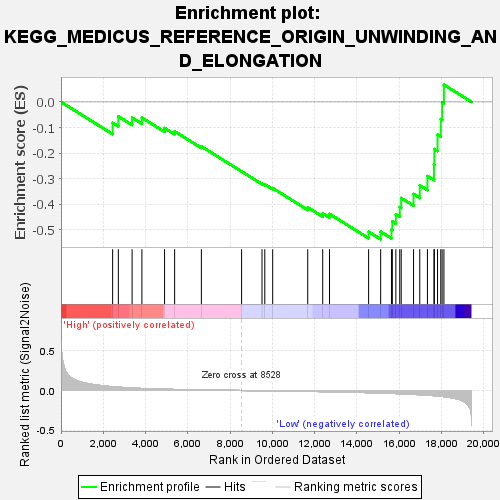
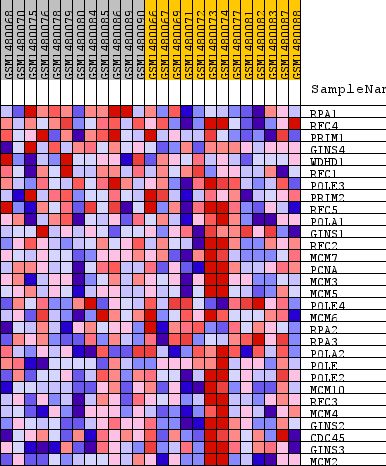
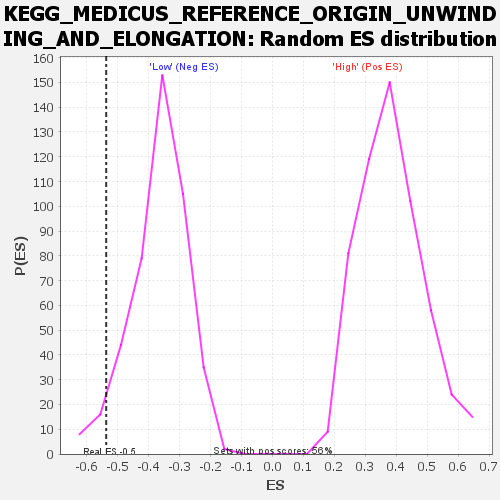

| Dataset | WG6v3.CYGB.cls#High_versus_Low.CYGB.cls#High_versus_Low_repos |
| Phenotype | CYGB.cls#High_versus_Low_repos |
| Upregulated in class | Low |
| GeneSet | KEGG_MEDICUS_REFERENCE_ORIGIN_UNWINDING_AND_ELONGATION |
| Enrichment Score (ES) | -0.53686386 |
| Normalized Enrichment Score (NES) | -1.4730076 |
| Nominal p-value | 0.042986427 |
| FDR q-value | 0.26857352 |
| FWER p-Value | 0.991 |

| SYMBOL | TITLE | RANK IN GENE LIST | RANK METRIC SCORE | RUNNING ES | CORE ENRICHMENT | |
|---|---|---|---|---|---|---|
| 1 | RPA1 | RPA1 | 2443 | 0.047 | -0.0817 | No |
| 2 | RFC4 | RFC4 | 2713 | 0.042 | -0.0566 | No |
| 3 | PRIM1 | PRIM1 | 3364 | 0.031 | -0.0615 | No |
| 4 | GINS4 | GINS4 | 3828 | 0.025 | -0.0617 | No |
| 5 | WDHD1 | WDHD1 | 4900 | 0.016 | -0.1021 | No |
| 6 | RFC1 | RFC1 | 5377 | 0.013 | -0.1149 | No |
| 7 | POLE3 | POLE3 | 6642 | 0.007 | -0.1738 | No |
| 8 | PRIM2 | PRIM2 | 8545 | -0.000 | -0.2718 | No |
| 9 | RFC5 | RFC5 | 9511 | -0.003 | -0.3187 | No |
| 10 | POLA1 | POLA1 | 9642 | -0.004 | -0.3221 | No |
| 11 | GINS1 | GINS1 | 10016 | -0.005 | -0.3369 | No |
| 12 | RFC2 | RFC2 | 11674 | -0.011 | -0.4121 | No |
| 13 | MCM7 | MCM7 | 12383 | -0.014 | -0.4355 | No |
| 14 | PCNA | PCNA | 12704 | -0.015 | -0.4376 | No |
| 15 | MCM3 | MCM3 | 14555 | -0.027 | -0.5075 | Yes |
| 16 | MCM5 | MCM5 | 15125 | -0.032 | -0.5070 | Yes |
| 17 | POLE4 | POLE4 | 15636 | -0.036 | -0.4992 | Yes |
| 18 | MCM6 | MCM6 | 15678 | -0.037 | -0.4669 | Yes |
| 19 | RPA2 | RPA2 | 15844 | -0.038 | -0.4394 | Yes |
| 20 | RPA3 | RPA3 | 16028 | -0.041 | -0.4109 | Yes |
| 21 | POLA2 | POLA2 | 16097 | -0.041 | -0.3756 | Yes |
| 22 | POLE | POLE | 16681 | -0.049 | -0.3600 | Yes |
| 23 | POLE2 | POLE2 | 16975 | -0.053 | -0.3259 | Yes |
| 24 | MCM10 | MCM10 | 17338 | -0.059 | -0.2897 | Yes |
| 25 | RFC3 | RFC3 | 17647 | -0.065 | -0.2447 | Yes |
| 26 | MCM4 | MCM4 | 17665 | -0.065 | -0.1843 | Yes |
| 27 | GINS2 | GINS2 | 17816 | -0.069 | -0.1279 | Yes |
| 28 | CDC45 | CDC45 | 17969 | -0.073 | -0.0675 | Yes |
| 29 | GINS3 | GINS3 | 18033 | -0.075 | -0.0010 | Yes |
| 30 | MCM2 | MCM2 | 18118 | -0.077 | 0.0672 | Yes |

